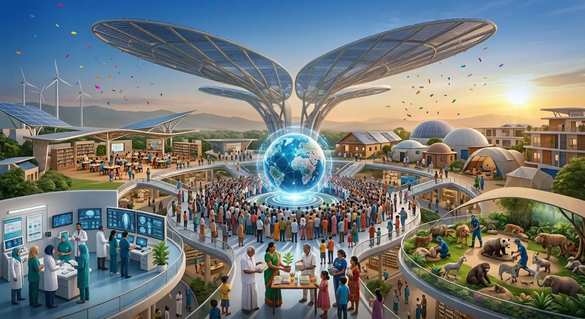
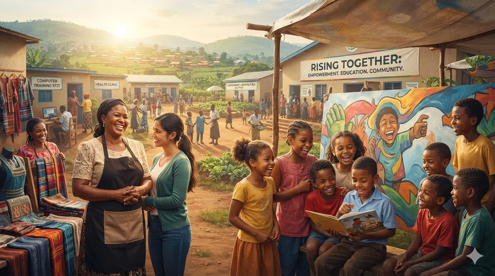

Make room for a better tomorrow.
Where people, opportunities, and compassion come together to create meaningful change.

Change begins when opportunity reaches someone.
Lasting progress needs four things at once: access to education, practical skills, a supportive community and a real chance to take part.
Kinora is a concept organisation built on that belief. We treat every person as capable and ambitious, and we measure ourselves by what people build, not by what they lack.

Concept illustration of the neighbours we work alongside. AI-generated, not real people.
Four ways we work

Learning Without Limits
Reading corners, shared books and patient mentors, so a child's curiosity never waits for a classroom to be built.
Explore Learning Without Limits
Her Next Chapter
Skills, savings circles and first-business coaching for women who are ready to earn on their own terms.
Explore Her Next Chapter
Skills for Tomorrow
Practical workshops, from solar kits to certificates, that turn learning into something you can use on Monday.
Explore Skills for Tomorrow
Stronger Together
Community meals, health information and volunteer-led projects that make a neighbourhood feel like one.
Explore Stronger TogetherHow change happens
Discover a need
Listen first. Neighbours tell us what is missing.
Connect with people
Match that need with volunteers, mentors and partners.
Take action
Start small and local, with clear roles and a schedule.
Build lasting opportunity
Hand over skills and tools so the work keeps going.
Find your way to help
Taking part can look many ways, and every contribution is voluntary.
- Volunteer your timeA few steady hours a week at reading circles, community days or events.
- Share your skillsTeach what you know: coding, accounts, sewing, farming, design.
- Mentor a learnerA regular, one-to-one conversation with a child or adult learner.
- Support an initiativeFund a programme. Demo only: no payments are taken on this site.
- Become a community partnerSchools, clinics and businesses working alongside us.
Stories that matter
Illustrative stories with fictional characters, not real testimonials.
A reading circle begins under the mango tree
Illustrative story: Meera, 9, wants to read the whole shelf before the monsoon.
Three women, one shared stall
Illustrative story: a savings circle turns a recipe into a stall.
Solar kits and a first certificate
Illustrative story: a workshop where learning becomes something to hold.
Trust and transparency
Our approach
Listen, co-design with residents, start small, review in public.
Responsible participation
Clear roles, safeguarding for children, and no pressure to give.
Reports
Verified reports would be published on the Impact page. None exist yet because this is a concept project. We claim no registrations or partnerships.
A better future is something we build together.
Start with what you can offer. Discover where it can make a difference.
Take Your First Step